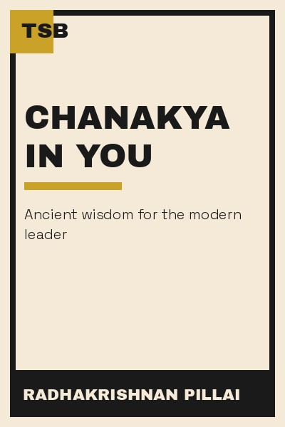

Library › Power & Strategy
Chanakya in You — Summary & Key Lessons

The Arthashastra's ancient playbook, translated for the modern professional.
📖 OPEN THE FULL INTERACTIVE BREAKDOWN →🌐 Read it in Hindi, Hinglish, Gujarati, Tamil & 22 more languages — free, with audio.
💡 The Big Idea
Chanakya, the strategist who built the Mauryan empire, wrote the Arthashastra — a complete manual of statecraft covering leadership, finance, espionage and personal discipline. Pillai's 'Chanakya in You' translates it for modern life: the same principles that built an empire build a career — clear purpose (rajya), the right team (amatyas), daily discipline (yoga-kshema), and the wisdom to know when to act and when to wait. Ancient text, timeless mechanics.
🧠 The 6 Key Lessons
Lesson 1: Ask the Three Questions Before Any Work
The Foundation
Chanakya's rule: before starting anything, ask why you're doing it, what the results might be, and whether you can succeed. Most failed projects skip question one (purpose), fudge question two (outcome) and ignore question three (feasibility). Pillai's translation: the three questions are a cheap filter that saves years.
📖 Example: A startup that asks 'why' finds its mission; one that skips it finds itself building something nobody wants. The three questions would have caught it in a week. The practical edge: 'ask the three questions before any work' is not a one-time decision — it's a… Read the full example →
⚡ Do this: Before your next project, write the three answers in one paragraph. If any answer is vague, the project isn't ready.
Lesson 2: Your Team Is Your Empire
The Amatyas
Chanakya's empire ran on carefully chosen ministers — each selected for competence, tested for loyalty. Pillai's lesson: your 'amatyas' are your closest colleagues, partners and advisors. Their quality sets your ceiling. Choose slowly, test with real responsibility, and remove the untrustworthy early — a bad minister costs more than a good one earns.
📖 Example: Chanakya tested candidates by giving them real assignments and watching how they handled money, power and pressure — a hiring process modern companies still don't match. Here's the part that usually gets missed: 'your team is your empire' works quietly. You… Read the full example →
⚡ Do this: Review your inner circle like Chanakya: for each person, ask 'would I trust this person with my most important project?' Act on the honest answers.
Lesson 3: Daily Discipline Is the Real Strategy
Yoga-Kshema
The Arthashastra's king follows a daily routine — time for accounts, for the people, for learning, for rest. Pillai's point: strategy is what you do daily, not what you declare annually. Chanakya's king won because his days were designed; the modern professional who designs their day has already out-planned most of their competition.
📖 Example: Chanakya prescribed the king's entire day-hour by hour. The lesson isn't the schedule — it's that the most powerful person on earth still ran on one. The real test of this lesson is a bad day: the principle that survives a crisis, a tight deadline and a… Read the full example →
⚡ Do this: Design your ideal daily template: fixed blocks for deep work, people, learning and recovery. Run it for five days.
Lesson 4: Know When to Act and When to Wait
The Timing
Chanakya's statecraft is as much about waiting as acting — he famously waited years before moving against enemies, letting their errors mature. Pillai's translation: not every problem needs an immediate response. Some problems solve themselves if you give them time; some opponents destroy themselves if you don't interrupt. Patience is a strategic tool, not a personality trait.
📖 Example: Chanakya waited for the Nanda empire to rot from within before striking — the same patience he advises for any confrontation. In practice, 'know when to act and when to wait' shows up in tiny daily choices long before it shows up in outcomes — the choice is… Read the full example →
⚡ Do this: Pick one conflict you're tempted to escalate. Give it a 'wait period' of two weeks, then decide with fresh information.
Lesson 5: Money Must Be Managed Like a Kingdom
The Treasury
The Arthashastra is one of history's first complete finance manuals: budgets, audits, reserves, and the rule that the king's treasury must never be empty because a weak treasury invites attack. Pillai's translation: your personal and business finances are your kingdom's treasury — protect it with reserves, audits and honest accounting, and never let it become a tempting target.
📖 Example: Chanakya's insistence on reserves and audits sounds like modern advice on emergency funds and tax honesty — 2,300 years early. Most people nod at this principle and change nothing. The gap between agreeing and acting is where the whole game is won or lost. Read the full example →
⚡ Do this: Check your treasury: do you have an emergency reserve? Are your accounts honest and audited? Fix the weakest one this month.
Lesson 6: Hard Work Beats Everything
The Discipline
Chanakya's most repeated theme: there is no substitute for hard work — even the king rises first. The Arthashastra is full of systems, but every system assumes diligence behind it. Pillai's version: talent, luck and connections are real, but they all multiply effort — they don't replace it. The person who works harder, systematically, almost always wins.
📖 Example: Chanakya himself rose from exile to build an empire through relentless study and action — the book's first and final lesson. The uncomfortable truth about this lesson: it requires doing the boring version first — the unglamorous reps that nobody claps for. Read the full example →
⚡ Do this: Choose one area where you currently coast. Add one hour of systematic hard work daily for 30 days and measure the difference.
✅ 5-Step Action Plan
- Write the three-question filter for your next project.
- Audit your inner circle like Chanakya would.
- Design your daily template and run it for five days.
- Give one conflict a two-week wait period.
- Strengthen your treasury: reserves, audits, honest accounts.
⚠️ When This Doesn't Work
Chanakya's cunning is seductive — and it assumes you are the smartest person in the room. Ravana had every strategic gift the Arthashastra teaches — learning, power, statecraft — and his brilliance is exactly what made his arrogance fatal. Chanakya's own texts warn about overconfidence, but the genre's hero-worship of manipulation can produce leaders who are brilliant and untrustworthy — and brilliant untrustworthy leaders fail faster than honest mediocre ones, because no one warns them. The caveat: strategy without character is just a faster way to the grave.
💀 The Graveyard Proves It
👑 Ravana — The Scholar-King Whose Arrogance Cost Him an Empire. Burn: Kingdom, family and life — lost to one act of arrogance. Read the full case study →
💬 Best Quotes from Chanakya in You
- “Before you start some work, always ask yourself three questions: why am I doing it, what the results might be, and will I be successful.”
- “A person should not be too honest. Straight trees are cut first.”
- “Learn from the mistakes of others. You can't live long enough to make them all yourself.”
Interactive version: mark lessons as read, listen in your language, share quote cards.